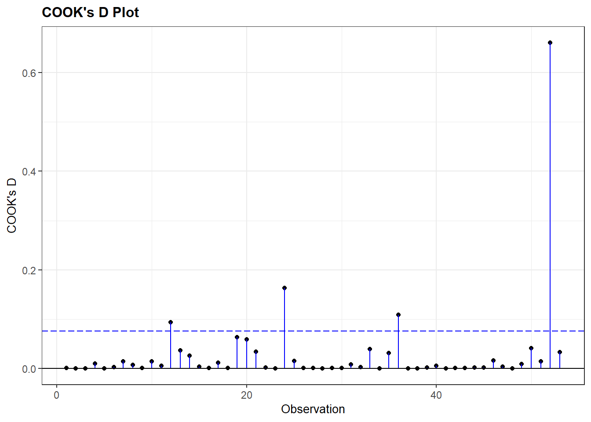

#specific packages for assumptions testing
library(car) #used for several assumption checks
library(ggResidpanel) #used for assumptions checks through plots
library(expss) #used for frequency tables
#general packages
library(rio) #loading data
library(tidyverse) #data manipulation and plotting
library(broom) #for obtaining residuals and influence measures7 OLS Assumptions
This week we focus on testing whether the assumptions of an OLS regression have been violated. The following 6 assumptions are tested:
- Independent errors (time clustering & serial autocorrelation)
- No excessive multicollinearity
- Linearity and additivity
- Homoskedasticity
- Normally distributed errors
- Limited impact of outliers and influential cases
We begin our R script by loading relevant libraries. Note that these libraries are already installed on university computers but must first be loaded before use.
Warning!
It is important to note that 2 packages used here for assumptions testing can clash with certain aspects of the dplyr package (from tidyverse): car and expss. Specifically, the latter 2 packages also have a recode function that uses different syntax than dplyr. If you try to use the recode syntax from dplyr after loading car or expss, then an error will occur. There are three ways to handle this:
- Load
carandexpssbefore loadingtidyverseto ensure therecodefunction ofdplyris installed as the final one. This is done in the R code above; - When using
recode, specify which package you want to use recode from. Instead of writing the functionrecodein your syntax, you will writedplyr::recode. - detach
carandexpssafter you used them for assumptions check with thedetachcode. The code is shown below, to run it the hashtag needs to be deleted (adding it prevents the code from actually running as we will still use the packages in this overview).
# detach("package:car")
# detach("package:expss")7.1 Independent errors and the Durbin-Watson test
The assumption of independent errors relates to the condition that observations are independently selected from each other. This condition is not met when there is a time relation between observations or when there is geographical clustering (e.g. when multistage sampling is used for a survey).
The Durbin-Watson test can be used to check whether a time relation leads to too much correlation between the errors. It cannot be used when there is no time relation (e.g. a cross-sectional survey). In addition, the dataset needs to be ordered on the time dimension (old-to-new or new-to-old).
The example dataset “gdp-dem, time order.csv” adheres to these conditions. It records the gdp and democracy scores for a single country over time. The dataset is fictitious. There is no missing data, but the below code can also be used for datasets with missing values (‘NA’).
dta <- import("gdp-dem, time order.csv")
head(dta, n = 10L) #So we just see the first ten rows year gdp democracy
1 1990 8400 50
2 1991 8500 55
3 1992 8800 60
4 1993 8700 60
5 1994 8600 60
6 1995 8800 65
7 1996 9200 65
8 1997 9300 65
9 1998 9500 70
10 1999 9700 70This data is properly sorted by time. We can use the arrange function from the dplyr package (part of tidyverse) in situations where the dataset is not properly sorted.
#sort ascending
dta <- dta |>
arrange(year)
#sort descending
dta <- dta |>
arrange(desc(year))dta <- dta-
This code specifies that we want the ordered dataset to replace the original. We could also create a new dataset which is ordered, but that is generally not needed.
arrange(year)-
This function asks R to sort (‘arrange’) the dataset based on the variable
year. This sorts the dataset from old to new. We can sort on multiple variables by separating them with a comma. arrange(desc(year))-
This function sorts the dataset on the descending order of the variable(s) specified in brackets.
We run a simple bivariate regression with gdp as the independent variable and democracy as the dependent variable:
#Run model
time_model <- lm(democracy ~ gdp, data = dta)
#Examine coefficients
tidy(time_model)# A tibble: 2 × 5
term estimate std.error statistic p.value
<chr> <dbl> <dbl> <dbl> <dbl>
1 (Intercept) -36.2 13.9 -2.61 0.0143
2 gdp 0.0111 0.00148 7.50 0.0000000291We use the Durbin-Watson test through the car package to assess whether we have an issue with serial autocorrelation.
durbinWatsonTest(time_model) lag Autocorrelation D-W Statistic p-value
1 0.5124721 0.8369625 0
Alternative hypothesis: rho != 0durbinWatsonTest(modelname)-
Uses the Durbin-Watson test on a model, the name of which is specified in brackets.
Output Explanation
- Autocorrelation: Degree of correlation between errors
- D-W Statistic: The Durbin-Watson statistic. Values below 1 or above 3 indicate too much autocorrelation.
- p-value: The p-value for a hypothesis test wherein the null hypothesis is that the autocorrelation is not significantly different from 0.
The D-W statistic for this model is 0.84 , which indicates that we have a problem with autocorrelation.
7.2 No excessive multicollinearity
We will use a different dataset, one without the problem of autocorrelation, for our other assumption tests. We use the democracy dataset (demadata.rds) and run a multiple regression model predicting V-Dem polyarchy scores based on inequality (gini_2019), history of democracy (TYPEDEMO1984, factorized), and past gross domestic product per capita (GDP2006).
#Load Data
demdata <- import("demdata.rds") |>
as_tibble()
#Factorize our binary variable
demdata <- demdata |>
mutate(TYPEDEMO1984 = factorize(TYPEDEMO1984))
#Run and store a model and then look at the output
model_multiple <- lm(v2x_polyarchy ~ gini_2019 + TYPEDEMO1984 + GDP2006, data = demdata)
summary(model_multiple)# A tibble: 4 × 7
term estimate std.error statistic p.value conf.low conf.high
<chr> <dbl> <dbl> <dbl> <dbl> <dbl> <dbl>
1 (Intercept) 6.78e-1 2.02e-1 3.36 0.00153 2.72e-1 1.08
2 gini_2019 -4.99e-3 4.98e-3 -1.00 0.322 -1.50e-2 0.00502
3 TYPEDEMO1984Democraci… 7.00e-2 5.95e-2 1.18 0.246 -4.97e-2 0.190
4 GDP2006 8.58e-6 2.70e-6 3.17 0.00261 3.14e-6 0.0000140The coefficients for gini_2019 (p = 0.322) and TYPEDEMO1984 (p = 0.246) are statistically insignificant. Is that because of too much multicollinearity? We can again rely on the car package to answer this question via its vif() function.
vif(model_multiple) gini_2019 TYPEDEMO1984 GDP2006
1.811074 1.171946 2.039059 vif(multiple)-
Uses the vif function on a model specified in brackets.
The output provides the VIF statistics underneath each variable name. No statistic is above 5, which indicates that we do not have a problem with excessive multicollinearity.
Warning!
The output of this command will look different if you have a categorical variable in the model, as in this example:
demdata <- demdata |>
mutate(Typeregime2006 = factorize(Typeregime2006))
vif_example <- lm(v2x_polyarchy ~ gini_2019 + GDP2006 + Typeregime2006, data = demdata)
vif(vif_example) GVIF Df GVIF^(1/(2*Df))
gini_2019 1.385354 1 1.177011
GDP2006 1.448928 1 1.203714
Typeregime2006 1.346530 2 1.077219vif() reports versions of the VIF statistic called GVIF and GVIF^(1/(2*DF)) that adjust for the fact the categorical variable has multiple coefficients and hence degrees of freedom. You can assess multicollinearity in these instances by squaring the GVIF^(1/(2*DF)) and using the same rules of thumb as for VIF. In essence, we are looking for whether this statistic is around 2.23 or larger. We do not have a problem in this example.
7.3 Linearity and additivity
A linear regression model relies on the assumption that the relationship between the predictors and the dependent variable can be captured in a linear equation. To check this we can investigate a plot of the model’s residuals against the model’s fitted (predicted) values via the resid_panel() command from the ggResidpanel package.
We first check whether a simplified polyarchy model with only economic inequality (gini_2019) as a predictor violates the linearity and additivity assumption.
bivar_model <- lm(v2x_polyarchy ~ gini_2019, data=demdata)
resid_panel(bivar_model, plots = c("resid"))Ideally, the dots will look randomly distributed rather than showing some type of non-linear pattern. The results above do not suggest a violation of this assumption.
7.3.1 Logged relationships
We do not always get a residual plot with just random dots. Let us take a look at the plot for the more extended model of polyarchy (model_multiple).
resid_panel(model_multiple, plots = c("resid"))The residuals plot suggests a non-linear relationship. However, it cannot tell us which independent variable in the model might be at fault. We can investigate this question via the avPlots() function from the car package.
avPlots(model_multiple)Each plot is a partial regression plot or “added-variable plot”. It shows the relationship between a given IV and the DV that is “residual” of the other predictors (i.e., the relationship between the IV in the sub-plot and the DV after accounting for the relationship between the other predictors in the model and these variables).
We are only interested in partial regression plots for continuous predictors. We can thus ignore the plot for TYPEDEMO1984.
Turning to the GDP2006 predictor, we find a steep regression line (the coefficient was significant), but the dots are not evenly distributed around the line. In contrast, it looks like the relationship could be better described as a degressive curve rather than as a linear relationship.
We can account for this by transforming GDP2006 using the natural logarithm, including that variable in our model rather than the original GDP2006 variable, and then re-checking our diagnostic plots. We can use the log() function to take the natural logarithm of GDP2006.
demdata <- demdata |>
mutate(LNGDP2006 = log(GDP2006))Here, we re-run the model and re-check our diagnostic plots. The plots look better than before.
#Re-running the model
multiple_ln <- lm(v2x_polyarchy ~ gini_2019 + TYPEDEMO1984 + LNGDP2006,
data=demdata)
#Residual Plot
resid_panel(multiple_ln, plots = c("resid"))#Partial Regression Plot
avPlots(multiple_ln)7.3.2 Quadratic relationships
Another non-linear relationship we may encounter is the quadratic or curvilinear one. Our example draws on the ‘more violence in the middle’ theory which holds that there is a quadratic relationship between political violence and democracy scores such that violence will be more prevalent at intermediate levels of democracy.
Our measure for political violence and instability is pve, which is drawn from the 2021 World Governance Indicators. Higher values on this variable mean less violence. Our predictor variable is the now familiar electoral democracy measure from the Varieties of Democracy Project, v2x_polyarchy.
It is generally a wise idea to visually examine the relationship between two variables before progressing to a statistical model. We do so here via a scatterplot:
ggplot(demdata, aes(x = v2x_polyarchy, y = pve)) +
geom_point() +
geom_smooth(method = "loess") +
labs(title = "Political violence and regime type",
x = "Electoral democracy (2020)",
y = "Absence of political violence and instability (2021)")The syntax for this plot is similar to what we have seen before for producing a scatterplot (Section 1.2), but with one important difference:
geom_smooth(method = "loess")-
We ask R to plot a “smoothed” line to our data to summarize the relationship between the two variables. The information within the parenthesis (
method =) indicates what type of line we want. We have previously usedmethod = "lm"to produce a linear regression line. Here, we usemethod = "loess". Loess stands for ‘locally estimated scatterplot smoothing’. Basically, this type of smoothed line follows the data as much as possible thereby enabling a non-linear relationship to be plotted, whereas “lm” makes the assumption that the relationship is linear in nature. The loess method is the default, so if nothing is specified for the method between brackets the loess line will be drawn, i.e. when just writinggeom_smooth().
There appears to be some support for a curvillinear, rather than linear, relationship between the two variables. We’ll begin with a linear model:
#Run the model
Violence_linmodel <- lm(pve ~ v2x_polyarchy, data = demdata)
#Summarize it
tidy(Violence_linmodel, conf.int = TRUE)# A tibble: 2 × 7
term estimate std.error statistic p.value conf.low conf.high
<chr> <dbl> <dbl> <dbl> <dbl> <dbl> <dbl>
1 (Intercept) -1.34 0.135 -9.90 2.36e-18 -1.60 -1.07
2 v2x_polyarchy 2.19 0.233 9.38 5.75e-17 1.73 2.65The non-linear nature of the relationship may show up in the residual plot, though this is not obviously the case here:
resid_panel(Violence_linmodel, plots = c("resid"))We can check whether a quadratic relationship is a better fit for the data by adding a quadratic term to our regression model. We first create the quadratic term via mutate() and then add it to the equation alongside the non-squared version of the variable:
#Create the squared term
demdata <- demdata |>
mutate(v2x_polyarchy_sq = v2x_polyarchy^2)
#Update the model
Violence_sqmodel <- lm(pve ~ v2x_polyarchy + v2x_polyarchy_sq,
data=demdata)
tidy(Violence_sqmodel, conf.int = TRUE)# A tibble: 3 × 7
term estimate std.error statistic p.value conf.low conf.high
<chr> <dbl> <dbl> <dbl> <dbl> <dbl> <dbl>
1 (Intercept) -0.589 0.243 -2.42 0.0165 -1.07 -0.109
2 v2x_polyarchy -1.73 1.10 -1.58 0.117 -3.90 0.438
3 v2x_polyarchy_sq 3.83 1.05 3.64 0.000361 1.75 5.90 The quadratic term is statistically significant (p < 0.001). This indicates that the relationship between v2x_polyarchy and pve is better modeled as non-linear in nature.
We can then inspect the residual plot again to re-check our assumptions (see example below).
7.4 Homoskedasticity
We can inspect the residuals vs. fitted values plot again to investigate the assumption of homoskedasticity as well as the assumption of linearity. Here, for instance, is the residuals plot for the quadratic model of political violence that we just fit (Violence_sqmodel):
resid_panel(Violence_sqmodel, plots = c("resid"))We are again looking for a random pattern of dots (homoskedasticity) rather than some type of funnel shape (heteroskedasticity). A funnel shape appears in the plot above, indicating that this assumption is being violated.
7.5 Normally distributed errors
We investigate whether the assumption of normally distributed errors holds by means of two plots from the ggResidpanel package: a histogram and a normal quantile (qq) plot of the model’s residuals.
This example checks the assumption of normality for the multiple linear regression model predicting democracy scores with the logged version of GDP included as a predictor variable:
resid_panel(multiple_ln, plots = c("hist", "qq"))plots = c("hist", "qq"))-
We ask for the histogram and qq-plot.
Note that we can also add our residuals vs fitted (“resid”) plot in the same code if we want to inspect multiple assumptions quickly. For instance:
resid_panel(multiple_ln, plots = c("resid", "hist", "qq"))7.6 Limited impact of outliers and influential cases
We will use the augment() function from the broom package to investigate whether outliers and influential cases are impacting our results.
Our example will use the multiple_ln model from earlier wherein we predicted a country’s democracy score based on its level of inequality, prior regime status, and a logged version of GDP.
#Run the command and store results
demdata_multln <- augment(multiple_ln)demdata_multln <-augment(multiple_ln)-
The augment function is used on the model specified in brackets, and the results are saved to a new data object (
demdata_multln).
Here is what the contents of the data object look like:
demdata_multln# A tibble: 53 × 11
.rownames v2x_polyarchy gini_2019 TYPEDEMO1984 LNGDP2006 .fitted .resid
<chr> <dbl> <dbl> <fct> <dbl> <dbl> <dbl>
1 3 0.908 26.5 Democracies 10.3 0.857 0.0514
2 4 0.894 30.1 Democracies 10.5 0.881 0.0129
3 10 0.485 37.5 Autocracies 7.38 0.480 0.00510
4 13 0.652 48 Democracies 7.75 0.559 0.0925
5 14 0.632 29.3 Autocracies 8.62 0.625 0.00694
6 15 0.678 47.6 Democracies 8.31 0.632 0.0464
7 16 0.807 38.7 Democracies 10.5 0.906 -0.0995
8 17 0.882 32.1 Democracies 9.32 0.733 0.149
9 18 0.577 37.3 Democracies 7.68 0.530 0.0466
10 20 0.327 40.7 Democracies 6.99 0.447 -0.120
# ℹ 43 more rows
# ℹ 4 more variables: .hat <dbl>, .sigma <dbl>, .cooksd <dbl>, .std.resid <dbl>
Output Explanation
augment() produces a dataframe with all of the observations used in fitting our model and with the following columns:
.rownames: This provides the row number of the observation in our original datasetv2x_polyarchythroughLNGDP2006: These are the variables in our model and the value each observation has on the variable. Of course, these columns will take on the names of the variables in your own models when you run them..fitted: “Fitted” estimates from the model. In other words, the value of the dependent variable the model predicts the observation should take on based on its characteristics and the model parameters.resid: The residual for each observation, where Residual = Observed - Fitted/Predicted. Here: Residual =v2x_polyarchy-.fitted.hat: Diagonal of the hat matrix; this can be ignored..sigma:Estimated residual standard deviation when the observation is dropped from the model; this can be ignored..cooksd: The Cook’s distance statistic for the observation. See below..std.resid: Not shown in the displayed output. This column contains the standardized residuals from the model. See below.
We use the standardized residuals (.std.resid) data to look for the presence of “too many outliers” and the Cook’s D values (.cooksd) to examine whether there are any “influential cases”.
7.6.1 Investigating outliers
We first investigate the summary statistics of the standardized residuals (saved in the demdata_multln dataset) . Specifically, we look at the minimum and maximum values to see any observations cross the different outlier thresholds that we are interested in (|1.96|, |2.54|, and especially |3.29|).
summary(demdata_multln$.std.resid) Min. 1st Qu. Median Mean 3rd Qu. Max.
-3.1281471 -0.2252984 0.2109869 -0.0007828 0.5831831 1.7394397 We do see some potentially concerning values in the output above. There is at least one value where the absolute value of the standardized residual is greater than 2.58, which we can see from the fact that the minimum value is -3.128. However, this is not necessarily a problem. We must now investigate how many observations cross our threshold values of |1.96| (at least one given the output above), |2.58| (again, at least one), or |3.29| (none based on the above output).
We can do this by creating 3 new dummy variables in the dataset we created using augment(): SRE1.96, SRE2.58, SRE3.29. The dummy variables take on the value of ‘1’ if the standardized residual for an observation is higher than the specified threshold value. Otherwise, the variable takes on the value of ‘0’. We use the case_when() function (from dplyr) to do this coding; see Statistics I, 5.1 for a refresher on how this command works.
The code below can remain largely unaltered in your own syntax with only the name of the dataset (here: demdata_multln) needing to be altered.
demdata_multln <- demdata_multln |>
mutate(SRE1.96 = case_when(
.std.resid > 1.96 | .std.resid < -1.96 ~ 1,
.std.resid > -1.96 & .std.resid < 1.96 ~ 0),
SRE2.58 = case_when(
.std.resid > 2.58 | .std.resid < -2.58 ~ 1,
.std.resid > -2.58 & .std.resid < 2.58 ~ 0),
SRE3.29 = case_when(
.std.resid > 3.29 | .std.resid < -3.29 ~ 1,
.std.resid > -3.29 & .std.resid < 3.29 ~ 0
))Here is how to read the syntax:
demdata_multln <- demdata_multln |>-
The new variables we create will draw on the
demdata_multlndataset (for the.std.residvariable), while the new dummy variables will also be stored in this dataset. mutate(SRE1.96 = case_when(-
We create a new variable named SRE1.96. The values for this variable will be specified through the
case_whenfunction. .std.resid > 1.96 | .std.resid < -1.96 ~ 1,-
Here we specify that when values for
.std.residare higher than 1.96 or (or is signified by the|line) lower than -1.96, our SRE1.96 variable will take on (~) the value of 1. Note that we have to specify the.std.residvariable twice. .std.resid > -1.96 & .std.resid < 1.96 ~ 0),-
Here we specify that when values for
.std.residare higher than -1.96 and (and is signified by the&) lower than 1.96, our SRE1.96 variable will take on (~) the value of 0. We then repeat these steps for the other two thresholds.
Now that we have created our threshold variables, we can inspect their frequency statistics. We use the fre() command from the expss package for the frequency tables.
Again, this code can remain largely unchanged, only the dataset name (here: demdata_multln) needs to be altered for own applications.
fre(demdata_multln$SRE1.96)| demdata_multln$SRE1.96 | Count | Valid percent | Percent | Responses, % | Cumulative responses, % |
|---|---|---|---|---|---|
| 0 | 49 | 92.5 | 92.5 | 92.5 | 92.5 |
| 1 | 4 | 7.5 | 7.5 | 7.5 | 100.0 |
| #Total | 53 | 100 | 100 | 100 | |
| <NA> | 0 | 0.0 |
fre(demdata_multln$SRE2.58)| demdata_multln$SRE2.58 | Count | Valid percent | Percent | Responses, % | Cumulative responses, % |
|---|---|---|---|---|---|
| 0 | 51 | 96.2 | 96.2 | 96.2 | 96.2 |
| 1 | 2 | 3.8 | 3.8 | 3.8 | 100.0 |
| #Total | 53 | 100 | 100 | 100 | |
| <NA> | 0 | 0.0 |
fre(demdata_multln$SRE3.29)| demdata_multln$SRE3.29 | Count | Valid percent | Percent | Responses, % | Cumulative responses, % |
|---|---|---|---|---|---|
| 0 | 53 | 100 | 100 | 100 | 100 |
| #Total | 53 | 100 | 100 | 100 | |
| <NA> | 0 | 0 |
We have more than 5% of cases with a standardized residual higher than 1.96 in absolute value, more than 1% higher than 2.58, and zero cases higher than 3.29 (we could already see this from the summary statistics above).
To investigate whether these outliers influence our results we conduct our linear regression again after filtering out cases with a standardized residual higher than 1.96 in absolute value. We can replace the SRE1.96 variable with the SRE2.58 and SRE3.29 variables to investigate the impact of alternative ways of excluding outliers.
multiple_ln1.96 <- lm(v2x_polyarchy ~ gini_2019 + TYPEDEMO1984 + LNGDP2006,
data = subset(demdata_multln, SRE1.96 == 0))data = subset(demdata_multln, SRE1.96 == 0))-
With this code we use the demdata_multln dataset created with augment, but subset it to only include cases for which the value for SRE1.96 is zero.
We could then compare the results from these models with those from the original model to check if the model’s coefficeints and standard errors have changed substantially. However, outliers should not be simply excluded in order to improve model fit. Outliers should only be removed from a model if there is a well-motivated theoretical reason for doing so.
7.6.2 Investigating influential cases
We check whether there are any observations with high Cook’s D values in our dataset in order to see if there are any influential cases in our model. Our rules of thumb are:
- values above 1 are generally cause of concern;
- values higher than 0.5 should be investigated more closely as they can also pose risks;
- values that are substantially higher than others in the dataset also require further attention.
We can investigate the summary statistics for Cook’s D values first.
summary(demdata_multln$.cooksd) Min. 1st Qu. Median Mean 3rd Qu. Max.
0.0000036 0.0007700 0.0035030 0.0292621 0.0162039 0.6608136 The summary overviews shows that we do not have any observations with a value above 1, but that at least one observation in the model has a Cook’s D value much higher than the rest of the observations. The maximum value is 0.66 and this value is substantially higher than others in the data. The 3rd Quantile value is only 0.016, indicating that 75% of the values are lower than 0.016.
We can also investigate this graphically by creating a plot of Cook’s D values through the ggResidpanel package:
resid_panel(multiple_ln, plots = c("cookd"))
plots = c("cookd"))-
We ask for a plot showing the Cook’s D values for the cases in the model on the y-axis, and the row number of the observation on the x-axis.
The plot shows there really is only one case that deviates strongly all the rest. Per the summary output, the Cook’s D value for this observation is 0.66.
We can check the results of a linear model without this case included. We run a new model filtering out the high Cook’s D value with the code below.
multiple_lncook <- lm(v2x_polyarchy ~ gini_2019 + TYPEDEMO1984 + LNGDP2006,
data = subset(demdata_multln, .cooksd < 0.65))data = subset(demdata_multln, .cooksd < 0.65))-
With this code we use the
demdata_multlndataset created with augment, but subset it to only include cases for which the value for.cooksdis less than 0.65. Note that we choose the value 0.65 because we know that our 1 case has a value of 0.66, while others are far lower. In principle we could have chosen 0.66, 0.64 etc. as long as the number mathematically divides those observations we aim to exclude from those we aim to keep in. The exact threshold number will need to be adapted for own applications.
We could exclude both outliers and influential cases at the same time by using the ‘&’ sign in our subsetting statement:
multiple_ln_excl <- lm(v2x_polyarchy ~ gini_2019 + TYPEDEMO1984 + LNGDP2006,
data = subset(demdata_multln,
SRE1.96 == 0 & .cooksd < 0.65))7.6.3 Finding specific cases
What we don’t know from the previous analyses is which cases were excluded exactly and what could explain why they stood out. To investigate this, we need to add the standardized residuals and Cook’s D values to the original dataset, where we also have the country name variable.
When missing values are present augment cannot fit the standardized residuals and Cook’s distances to the original dataset. A solution for this is to subset our dataset to only include complete cases, run the regression model again, and then use augment to add the standardized residuals and Cook’s D values to the subsetted dataset.
# create subset of data without NA values
demdata_complete <- demdata |>
filter(complete.cases(v2x_polyarchy, gini_2019, TYPEDEMO1984, LNGDP2006))
# run model with new complete cases dataset
multiple_ln <- lm(v2x_polyarchy ~ gini_2019 + TYPEDEMO1984 + LNGDP2006,
data=demdata_complete)
# use augment and add to dataset
demdata_complete <-augment(multiple_ln, data=demdata_complete)Now we can inspect specific outliers with the following code:
demdata_complete |>
filter(.std.resid > 1.96 | .std.resid < -1.96) |>
select(country_name, .std.resid)# A tibble: 4 × 2
country_name .std.resid
<chr> <dbl>
1 Thailand -2.17
2 Venezuela -2.68
3 China -2.53
4 Singapore -3.13filter(.std.resid > 1.96 | .std.resid < -1.96)-
here we specifically want to find outliers, so we filter for cases with a standardized residual higher than 1.96 or lower than 1.96.
select(country_name.std.resid)-
Here we ask R to print the names of the countries that are outliers as well as their specific standardized residual statistics.
demdata_complete |>
filter(.cooksd > 0.65) |>
select(country_name, .cooksd)# A tibble: 1 × 2
country_name .cooksd
<chr> <dbl>
1 Singapore 0.661